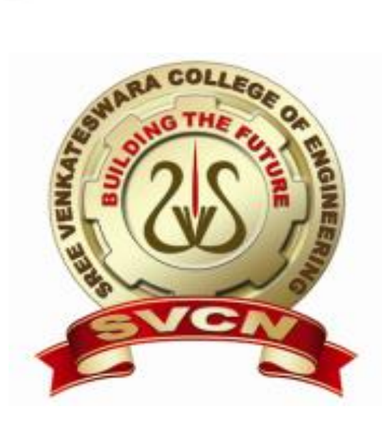
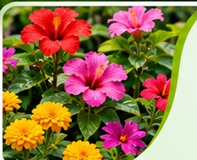
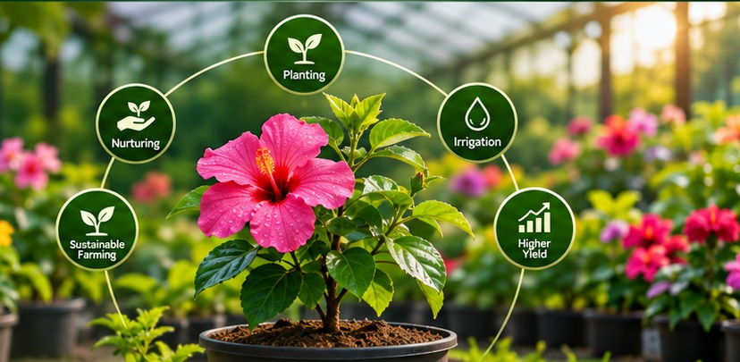
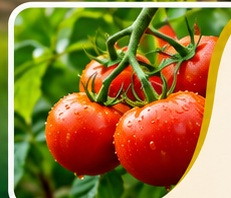

Learn
Understand horticulture crops and their growing requirements.

Sree VenkateswaraA Community Service Project (CSP) to promote horticulture practices, create awareness and provide a digital crop care guide for better and sustainable cultivation.
Horticulture is the science and practice of cultivating fruits, vegetables, flowers and ornamental plants.
Our Community Service Project focuses on learning about horticultural practices and sharing useful awareness with the community. The mini project extends this learning through a simple digital Horticulture Crop Care Guide.
Understand horticulture crops and their growing requirements.
Promote practical awareness about crop care and cultivation.
Make crop-care information easier to access through a digital guide.
Horticulture supports food, livelihoods, landscapes and environmental quality through the cultivation and care of plants.
Examples include mango, banana, guava, papaya and citrus. Orchard planning, pruning and harvest maturity are important parts of fruit production.
Tomato, chilli, brinjal and leafy vegetables provide fresh food. Crop rotation, healthy seedlings and balanced watering support good growth.
Rose, jasmine, marigold and chrysanthemum are grown for gardens, decoration and markets. Flower quality depends on variety and crop care.
Nurseries raise seedlings and ornamental plants. Clean containers, suitable growing media and careful hardening help plants establish well.
Cultivating knowledge and awareness for healthier, greener communities.
This six-week main project is centred on horticulture. The section can be updated with your actual field observations, community interactions, photographs and findings as your project progresses.

Understand suitable varieties, healthy planting material, seed sowing, transplanting and basic propagation methods.
Explore soil texture, organic matter, composting and the value of soil testing before applying nutrients.
Learn how watering needs change with crop, soil, weather and growth stage, and how efficient irrigation can reduce wastage.
Observe plant symptoms, maintain field hygiene and learn about preventive and integrated pest-management approaches.


Choose a crop to explore introductory information about growing conditions, watering, crop care, common pest and disease concerns, and harvesting. Local recommendations should be confirmed with a horticulture expert.
Add your own photographs from horticulture visits and project activities here. Replace these sample visuals with authentic CSP documentation.


B.Tech – Computer Science and Engineering
Sree Venkateswara College of Engineering
Project Guide
24JNA05802
24JNA05794
25JNA05509
24JNA05779
24JNA05787
A student-led effort to understand horticulture and make crop-care information easier to explore.